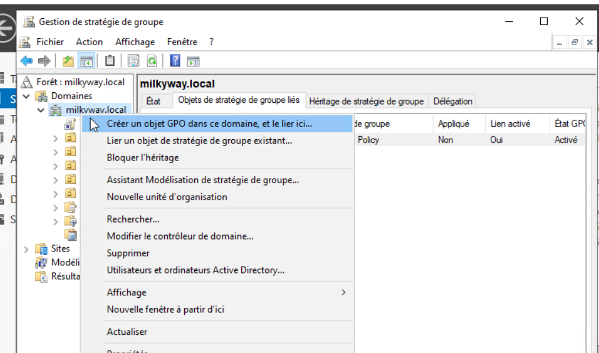
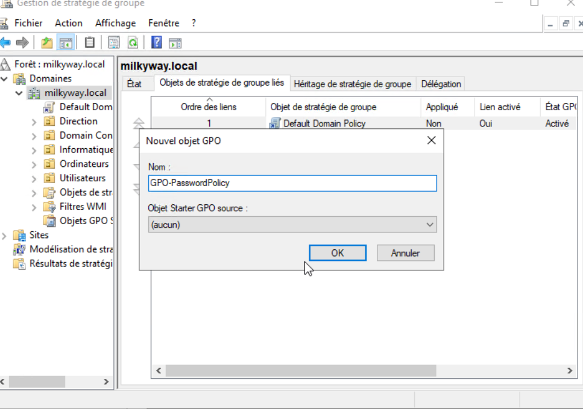
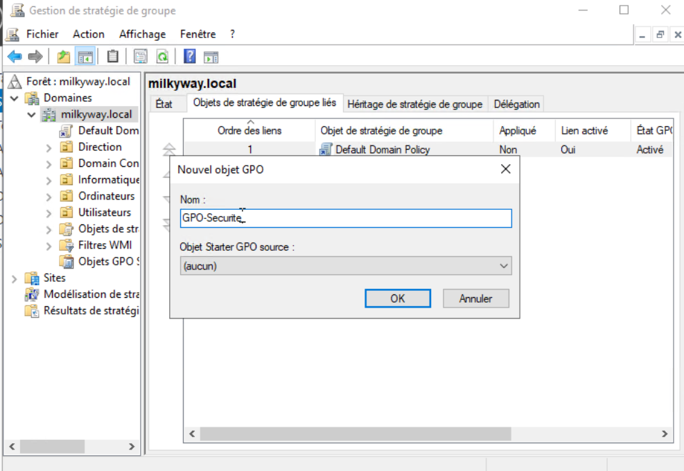
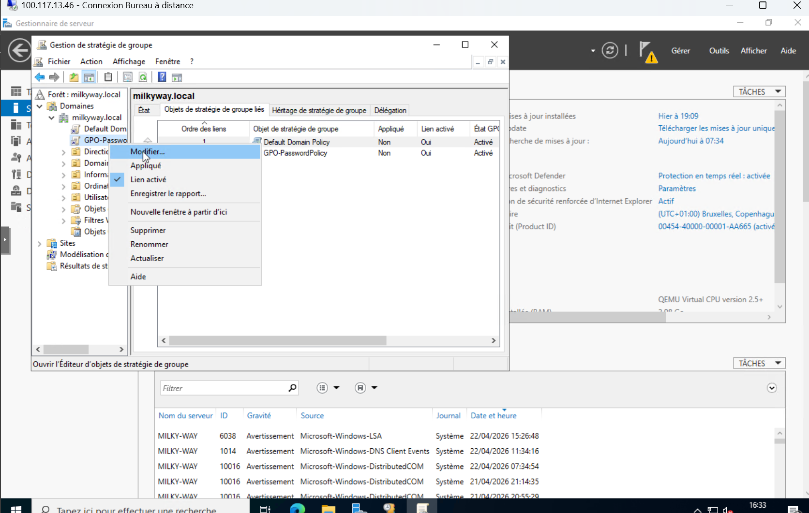
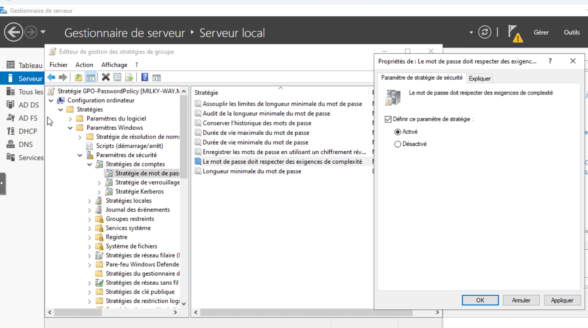
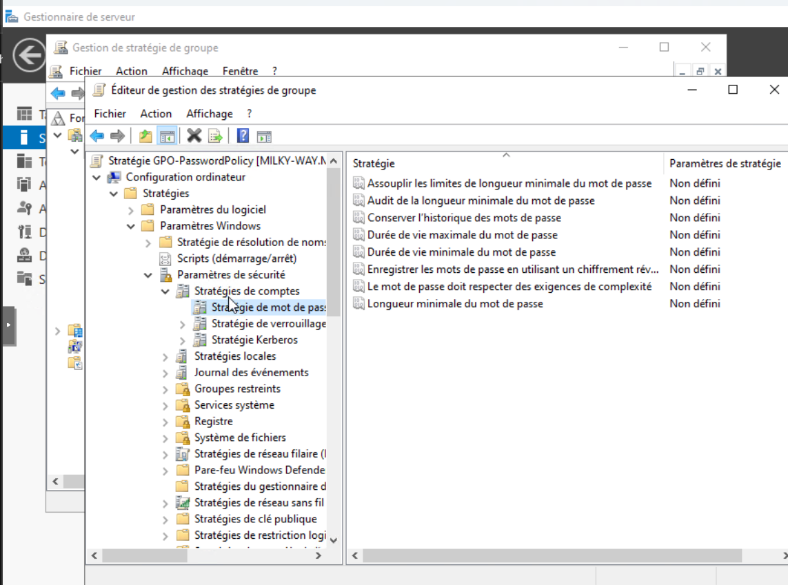
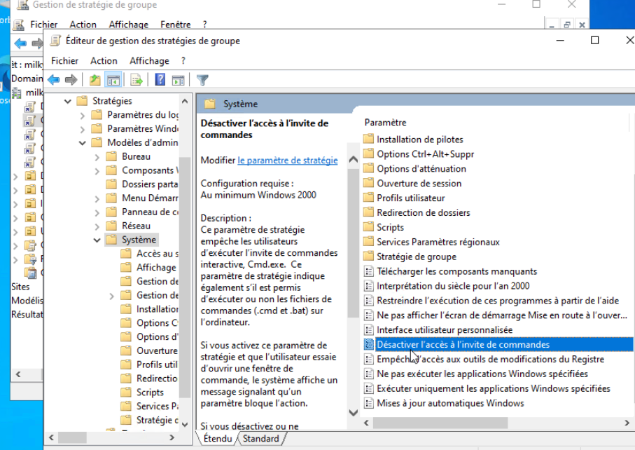
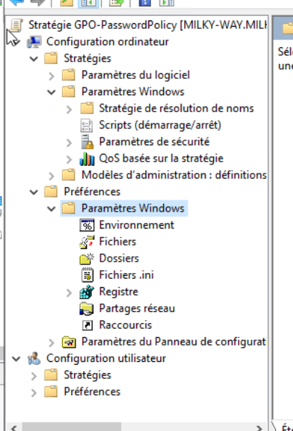

8. Configuration des GPO
Les GPO (Group Policy Objects) permettent d'appliquer des paramètres de configuration à tous les utilisateurs et ordinateurs du domaine depuis un point central. On les gère depuis la console Gestion des stratégies de groupe (GPMC), accessible via Outils dans le Gestionnaire de serveur. J'en ai créé 4 pour sécuriser l'environnement.
Comment créer une GPO
Dans la GPMC, on fait un clic droit sur le domaine ou l'OU où on veut la GPO → Créer un objet GPO dans ce domaine, et le lier ici.... Une fenêtre s'ouvre pour donner un nom à la GPO. Une fois créée, on double-clique dessus pour ouvrir l'éditeur et configurer les paramètres.

Clic droit sur milkyway.local pour créer une nouvelle GPO

Saisie du nom — GPO-PasswordPolicy

Exemple de création d'une GPO — ici GPO-Securite, même procédure pour toutes les GPO du domaine
Une fois la GPO créée, elle apparaît dans la liste des GPO liées à l'OU ou au domaine. Elle peut être modifiée à tout moment en double-cliquant dessus pour ouvrir l'éditeur de stratégie de groupe.

Console GPMC — GPO-PasswordPolicy visible dans les GPO liées à milkyway.local

Vue générale de la console GPMC avec les GPO du domaine
GPO-PasswordPolicy
C'est la GPO la plus importante — elle définit les règles de mot de passe pour tous les utilisateurs du domaine. Elle est liée directement à la racine du domaine (milkyway.local) pour s'appliquer à tout le monde. La politique de mot de passe se configure dans Configuration ordinateur → Paramètres Windows → Paramètres de sécurité → Stratégies de compte → Stratégie de mot de passe.

Éditeur de stratégie de groupe — section Stratégie de mot de passe dans GPO-PasswordPolicy
| Paramètre | Valeur configurée |
|---|---|
| Longueur minimale du mot de passe | 8 caractères |
| Complexité | Activée (majuscule + minuscule + chiffre + caractère spécial) |
| Durée de vie maximale | 90 jours |
| Durée de vie minimale | 30 jours |
| Historique des mots de passe | 5 mots de passe mémorisés |
| Seuil de verrouillage du compte | 5 tentatives échouées |
| Durée de verrouillage du compte | 10 minutes |
| Réinitialisation du compteur de verrouillage | 10 minutes |

GPO-PasswordPolicy — paramètre "La complexité du mot de passe doit être respectée" activé
Les 3 autres GPO
En plus de la politique de mot de passe, j'ai créé 3 GPO pour restreindre les actions des utilisateurs standards et standardiser l'environnement de travail.
GPO-Restriction
Liée à OU-Utilisateurs. Bloque l'accès au Panneau de configuration pour les utilisateurs standards. Configurée dans Configuration utilisateur → Modèles d'administration → Panneau de configuration → Interdire l'accès au Panneau de configuration et à PC Settings.
GPO-Application
Liée à OU-Utilisateurs. Bloque l'accès à l'invite de commandes (cmd.exe) pour les utilisateurs. Configurée dans Configuration utilisateur → Modèles d'administration → Système → Désactiver l'accès à l'invite de commandes.
GPO-FondEcran
Impose un fond d'écran commun à tous les utilisateurs du domaine. Le fichier image est stocké sur le partage \\Bras-d-Orion\GPO\ (TrueNAS). GPO configurée, en attente des partages SMB.
GPO-PasswordPolicy
Liée à milkyway.local (domaine entier). Politique de mot de passe : 8 caractères min, complexité activée, durée max 90 jours, verrouillage après 5 tentatives / 10 minutes.
GPO-Application — Blocage de cmd.exe
Pour la GPO qui bloque l'invite de commandes, on va dans l'éditeur → Configuration utilisateur → Modèles d'administration → Système → et on double-clique sur "Désactiver l'accès à l'invite de commandes". On passe le paramètre sur "Activé".

GPO-Application — paramètre "Désactiver l'accès à l'invite de commandes" dans l'éditeur de stratégie

Arborescence de l'éditeur GPO — on voit les deux sections Configuration ordinateur et Configuration utilisateur
← Retour à l'accueil